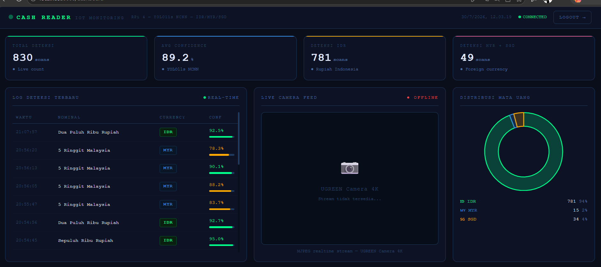
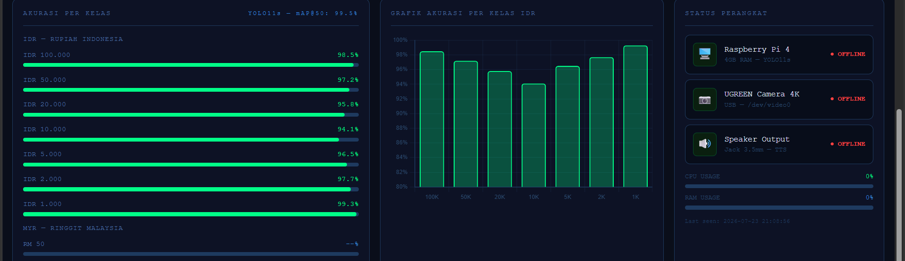

Mahasiswa D3 Teknik Informatika (IPK 3.78) dengan portofolio nyata di edge AI, computer vision, dan IoT — dilengkapi pengalaman analisis data & klien dari sektor perbankan yang mengasah cara berpikir berbasis dampak dan risiko.
// GANTI: foto profesional 1:1
Saya Ryan, mahasiswa Teknik Informatika di Politeknik Negeri Batam yang selama dua semester terakhir menjalani karier penuh waktu di sektor perbankan sebagai Account Officer & Sales — bekerja langsung dengan data kredit, analisis risiko, dan kebutuhan nasabah nyata.
Pengalaman itu justru menajamkan cara saya membangun teknologi: saya tidak hanya ingin sistem yang berjalan, tapi sistem yang menyelesaikan masalah nyata untuk orang nyata. Itu terlihat di proyek utama saya, CashReader — alat bantu berbasis computer vision yang membantu penyandang tunanetra mengenali nominal uang kertas secara mandiri.
Saat ini saya fokus memperdalam computer vision, edge AI deployment, dan IoT, sambil tetap membangun proyek pribadi di luar tugas kuliah — termasuk game simulasi bisnis yang sedang saya kembangkan dengan Unity.
Empat prinsip yang saya pegang saat membangun sistem — dibentuk oleh pengalaman nyata, bukan sekadar slogan.
Melatih model itu bagian mudah. Bagian sulitnya adalah membuatnya berjalan stabil di perangkat kecil seperti Raspberry Pi — itu yang saya kerjakan di CashReader, dari training sampai konversi ke NCNN untuk edge deployment.
Latar belakang saya di analisis kredit (5C, DSR) membentuk kebiasaan mengukur risiko dan dampak sebelum mengambil keputusan — kebiasaan yang sama saya bawa ke cara saya membangun & mengevaluasi sistem.
CashReader dirancang untuk penyandang tunanetra — bukan demo teknis semata. Itu berarti mendahulukan output suara, kecepatan real-time, dan keandalan offline di atas segalanya.
Di luar tugas kuliah, saya sedang membangun Capital Empire dengan Unity — bukan karena disuruh, tapi karena saya percaya kemampuan terbaik datang dari mengerjakan sesuatu sampai selesai, berulang kali.
Dua proyek yang sudah selesai dan dapat diverifikasi, plus satu proyek yang sedang saya bangun di luar jam kuliah.
Sistem deteksi nominal uang kertas secara real-time — mendukung tiga mata uang (IDR, MYR, SGD) — untuk membantu penyandang tunanetra bertransaksi secara mandiri, berjalan penuh di edge device tanpa bergantung pada cloud inference.
Penyandang tunanetra kesulitan membedakan nominal uang kertas secara mandiri. Solusi harus cepat, akurat, berjalan offline di perangkat kecil, dan memberi output non-visual (suara) secara real-time.
Model deteksi objek YOLO11 dilatih dengan dataset yang disusun & diberi anotasi melalui Roboflow, di-training menggunakan Kaggle GPU & Google Colab, lalu dikonversi ke format NCNN agar berjalan efisien di Raspberry Pi 4 — lengkap dengan output suara dan dashboard monitoring berbasis Firebase Realtime Database.
Model mencapai mAP@50 99.5% saat validasi, dengan rata-rata confidence 90%+ pada 830+ pengujian real-time lintas tiga mata uang (IDR, MYR, SGD). Dosen pembimbing menilai proyek ini setara dengan proyek tingkat S2. Dashboard di bawah menampilkan data langsung dari perangkat.


Tools berbasis AI untuk mempercepat kalkulasi Debt Service Ratio (DSR), analisis rekening koran, dan penilaian awal kelayakan debitur.
Analisis kelayakan kredit manual memakan waktu dan rawan human error, terutama saat volume prospek nasabah tinggi.
Membangun alur kerja berbasis AI untuk otomatisasi kalkulasi DSR dan pembacaan awal rekening koran, dikembangkan dari pemahaman langsung atas proses kerja Account Officer di lapangan.
Game simulasi bisnis idle yang saya kembangkan secara mandiri menggunakan Unity, dengan penyempurnaan berkelanjutan hingga 1–2 tahun ke depan.
Dikelompokkan berdasarkan domain, bukan daftar panjang — supaya kekuatan utama saya di AI/Computer Vision tetap terlihat jelas.
Pengalaman kerja penuh waktu di sektor perbankan & layanan pelanggan — mengasah kemampuan analisis, komunikasi klien, dan kerja berbasis target sambil menempuh kuliah.
Politeknik Negeri Batam (Polibatam) · 2023 — 2027
Fokus bidang: IoT, Web Development, Pemrograman Python, Database Management. Mengambil cuti aktif 2 semester untuk pengalaman kerja profesional di sektor perbankan, kini aktif kembali di Semester 4.
Lihat Transkrip Nilai (KHS) →Baik untuk peran full-time, internship, maupun kolaborasi proyek — saya senang mendiskusikannya. Silakan hubungi lewat salah satu kanal berikut.